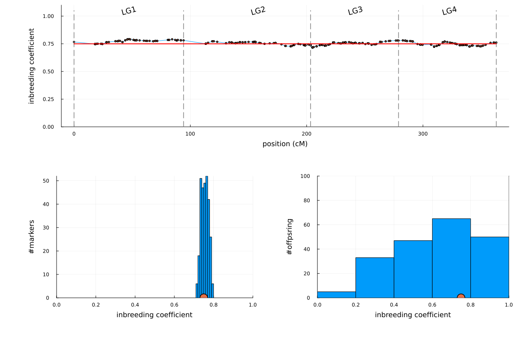

S6 MagicReconstruct
MagicReconstruct
The magicreconstruct performs haplotype reconstruction using the default HMM forward-backward algorithm (hmmalg = "forwardbackward"). The Viterbi algorithm (hmmalg = "viterbi") is also available.
# code for Julia
using MagicReconstruct
cd(@__DIR__)
genofile = outstem*"_magicimpute_geno.vcf.gz"
pedfile = outstem*"_magicfilter_ped.csv"
magicreconstruct(genofile,pedfile;
outstem
)# code for Linux shell.
# For Window CMD, replace multiline key \ by ^, and replace comment-key # by ::
julia rabbit_magicreconstruct.jl -g example_magicimpute_geno.vcf.gz \
-p example_magicfilter_ped.csv \
--nworker 5 \
-o exampleOutput files
| outfile | Description |
|---|---|
| outstem*"_magicreconstruct.log" | log file |
| outstem*"_magicreconstruct_ancestry.csv.gz | ancestry file for downstream analysis |
| outstem*"_magicreconstruct_probplots.tar | tar folder of plots for conditional probabilities |
| outstem*"_magicreconstruct_posterior_recom.csv | #recombinations for each offspring |
| outstem*"_magicreconstruct_posterior_recom.png | statistical plot of #recombinations |
Output: plot #breakpoints
outstem*"_magicreconstruct_posterior_recom.png" is the Violin plot of the posterior distribution of the number of recombination breakpoints (per Morgan) among offspring. The x-axis denotes the prior number of recombination breakpoints. See outstem*"_magicreconstruct_posterior_recom.csv" for the exact results.
Output: plot inbredcoef
The output file outstem*"_magicreconstruct_inbredcoef.png" is the plot of the estimated inbreeding coefficients; the red dots denote the theoretical expectation. See the output file outstem*"_magicreconstruct_ancestry.csv.gz" for the exact results.

Output: plot condprob
The output file outstem*"_magicreconstruct_ancestry.csv.gz" saves the main results for the downstream QTL mapping. We can read the output file by MagicBase.readmagicancestry and visualize the conditional probability by MagicBase.plotcondprob. The output file outstem*"_magicreconstruct_probplots.tar" includes plots for up to 10 offspring per subpopulation.
using Plots
using MagicBase
magicancestry = readmagicancestry("example_magicreconstruct_ancestry.csv.gz")
truefgl = formmagicgeno("example_magicsimulate_truefgl.csv.gz","example_magicfilter_ped.csv");
MagicBase.plotcondprob(magicancestry;
truefgl,
offspring=250,
probtype="diploprob",
size = (850,350),
left_margin = 5Plots.mm
)
The plot markers ("x") indicate the true origin states, and the bottom vertical bars ("|") indicate the marker positions.
MagicBase.plotcondprob(magicancestry;
truefgl,
offspring=250,
probtype="genoprob",
size = (850,250),
left_margin = 5Plots.mm
)
MagicBase.plotcondprob(magicancestry;
truefgl,
offspring=250,
probtype="haploprob",
size = (850,250),
left_margin = 5Plots.mm
)